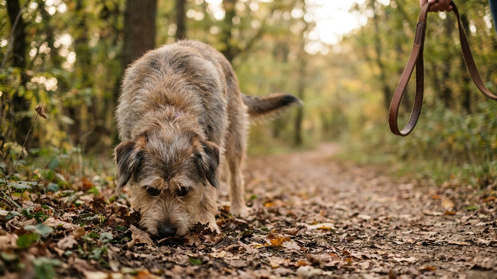

Сниффари: медленная прогулка, которая устаёт собаку лучше бега

9 июня 2026 · 7 минут чтения · Поведение · Прогулки · Собаки
Хозяин тянет поводок: «идём, не стой», — а собака зарылась носом в куст и никуда не торопится. Большинство хозяев считают это потерей времени. На самом деле именно эти минуты нюханья дают мозгу собаки столько нагрузки, сколько не даёт целый час бега. Концепция «сниффари» и декомпрессионных прогулок меняет подход к выгулу — и вот почему это работает.
🐾 Питомец ведёт себя странно?
AnimaLife расшифрует поведение кошки и собаки и подскажет, что делать. Попробуйте бесплатно прямо в мессенджере.
Открыть в Telegram → Открыть в MAX →
Что такое нюхательная система собаки — и почему она так важна
У собаки 300 миллионов обонятельных рецепторов — против 6 миллионов у человека. Доля мозга, обрабатывающая запахи, у собаки в 40 раз больше (пропорционально) чем у нас. Обоняние — это буквально основной канал восприятия мира: где кто был, что ел, каков его эмоциональный статус, болен ли, течёт ли самка.
Когда собака «читает» запах на столбе, она получает столько же информации, сколько мы из газетной статьи. Запретить ей нюхать — это как запретить человеку смотреть по сторонам. Технически можно, но мозг при этом работает вхолостую.
Исследование Daisy Devera 2019: что показали данные
В 2019 году поведенческий консультант Daisy Devera и её коллеги опубликовали исследование, в котором сравнивали уровень стресса и поведенческие показатели собак после трёх типов прогулок:
- Стандартная прогулка на поводке в темпе хозяина (нюханье ограничено).
- Активная прогулка с элементами бега и игры с хозяином.
- «Свободная» прогулка, где собаке позволяли нюхать столько, сколько хочет, в спокойном темпе.
Результаты: после «нюхательной» прогулки собаки демонстрировали более низкий уровень кортизола в слюне, меньшую возбудимость по возвращении домой и более длительный отдых после. Показательно, что прогулка с активным нюханьем была короче по времени, чем прогулка с бегом — но уровень «успокоенности» оказался выше.
Ментальная нагрузка от обработки сложных запаховых паттернов утомляет мозг значительно эффективнее физической активности.
Что такое сниффари и декомпрессионная прогулка: разница
Два популярных термина обозначают схожие, но не идентичные концепции:
- Сниффари (sniffari, от sniff + safari) — прогулка с акцентом на обнюхивание. Собака идёт куда хочет и нюхает что хочет. Хозяин следует за ней, а не ведёт по маршруту.
- Декомпрессионная прогулка — шире: прогулка, цель которой снять накопленный стресс. Включает сниффари, но также может включать свободное движение без поводка (если условия позволяют), отдых в траве, контакт с природными текстурами.
Оба формата объединяет одно: темп и маршрут диктует собака, не хозяин. Ваша задача — дать поводок подлиннее (или использовать длинный лонж 5–10 м) и не торопить.
Кому и когда особенно нужны такие прогулки
Декомпрессионные прогулки — не только для гиперактивных собак. Они особенно нужны:
- Собакам после стрессового события: визит к ветеринару, долгая поездка, конфликт с другой собакой, гости в доме. Дать собаке «понюхать мир» после стресса — лучший способ вернуть её в норму.
- Собакам с тревожностью: собаки, которые много лают дома, грызут вещи, не могут успокоиться вечером — часто хронически недополучают обонятельной нагрузки.
- Пожилым собакам: когда физическая нагрузка снижается из-за возраста, нюхательные прогулки поддерживают ментальную активность и качество жизни.
- Собакам в реабилитации: после операций и травм, когда физическая активность ограничена, сниффари позволяет давать нагрузку без риска перегрузить суставы.
Как встроить сниффари в ежедневный режим
Не нужно отказываться от всех прежних прогулок. Достаточно сделать одну из дневных прогулок «нюхательной»:
- Выделите 20–40 минут, когда не торопитесь. Сниффари с постоянным торопением — не сниффари.
- Возьмите длинный поводок (3–5 м) или лонж. Обычный короткий поводок сильно ограничивает свободу движения.
- Позвольте собаке самой выбирать направление. Идите за ней, а не тащите её за собой.
- Не ограничивайте нюханье по времени. Если собака стоит у столба три минуты — это нормально. Она «читает».
- Разнообразьте маршруты: новые запахи — новая информация. Парк, лес, набережная лучше одной и той же дворовой дорожки.
Нюхательные игры как продолжение сниффари дома
Если нет возможности выйти на долгую прогулку — обонятельная нагрузка доступна и в квартире:
- Поиск лакомств. Разложите несколько кусочков лакомства по квартире и дайте команду «ищи». Собака включается в охоту носом — 10–15 минут такой игры сопоставимы по нагрузке с 30-минутной прогулкой.
- Нюхательный коврик. Специальные «нюхательные» коврики с прорезями, в которые прячется корм. Собака достаёт еду носом, а не лапой.
- Конг или пазлы. Игрушки, в которые закладывается еда — дают нагрузку и голове, и носу.
Частые ошибки во время сниффари
- Торопить. «Ну пойдём уже!» — отменяет весь смысл прогулки. Если вы торопитесь — это не день для сниффари.
- Корректировать направление. Собака пошла налево — дайте ей пойти налево. Ваша задача следовать, а не вести.
- Использовать обычный короткий поводок. Собака должна иметь возможность опустить нос в траву, а не тянуться к ней с натяжением.
- Заменять сниффари на телефон. Прогулка, где хозяин в телефоне — не декомпрессия для собаки, это просто моцион. Попробуйте наблюдать за собакой: это само по себе интересно.
🐾 Понравился разбор?
Подпишитесь на канал — каждый день разбираем по одному тревожному симптому у кошек и собак: что в пределах нормы, а когда пора к врачу. Подпишитесь, чтобы не пропустить разбор, который может спасти здоровье вашего питомца.
← Все статьи · Открыть AnimaLife в Telegram · RSS